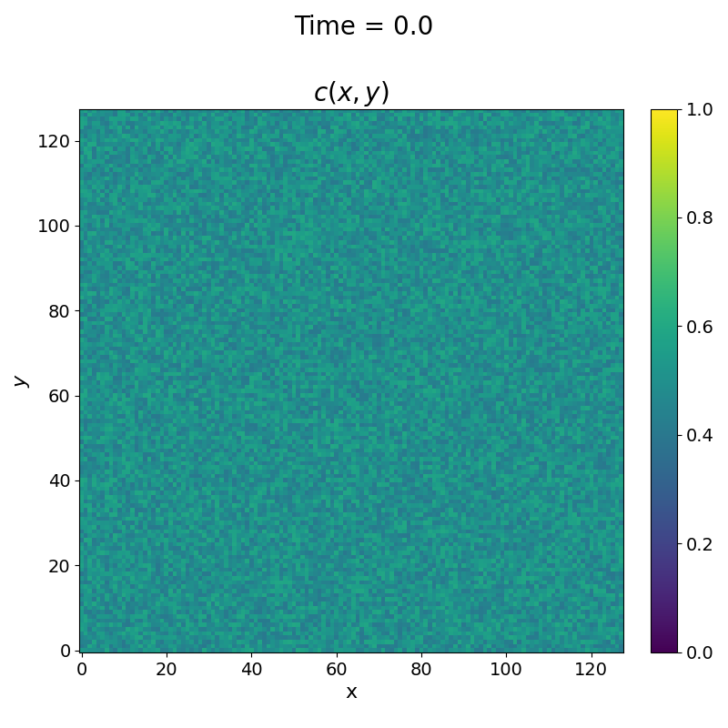
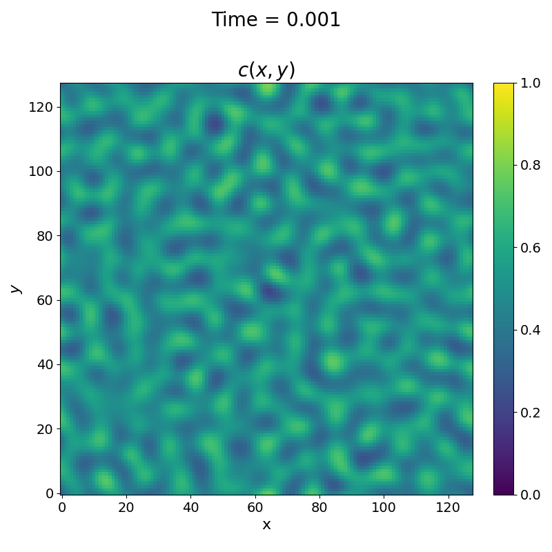
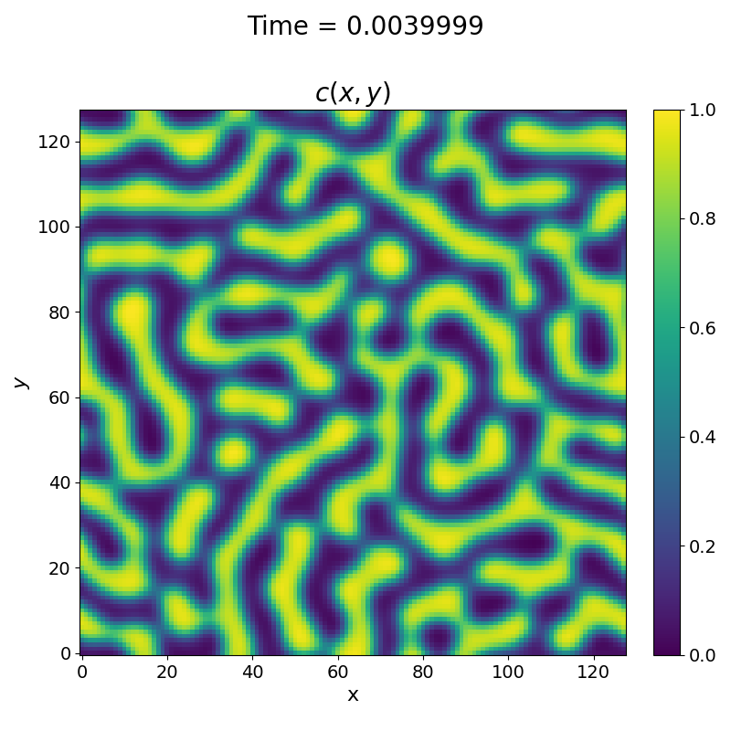
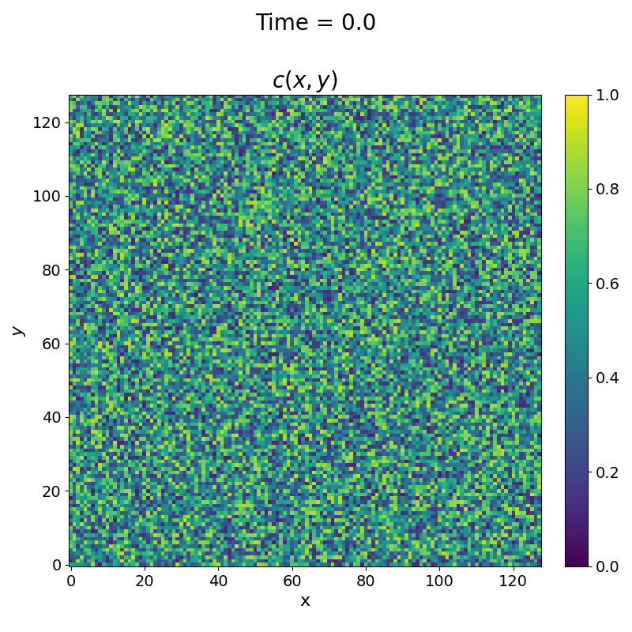
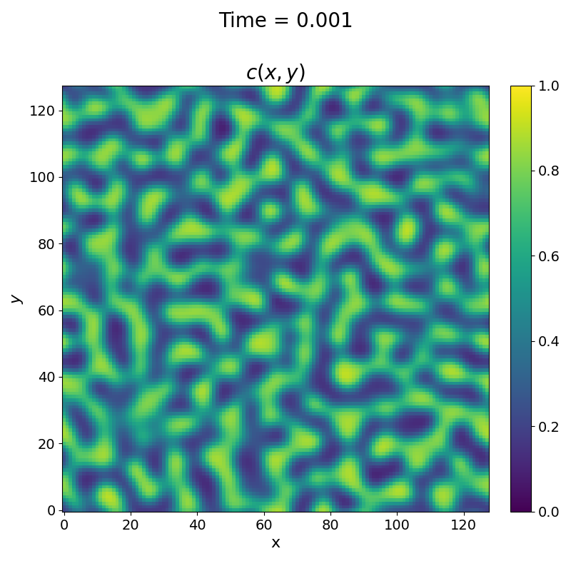
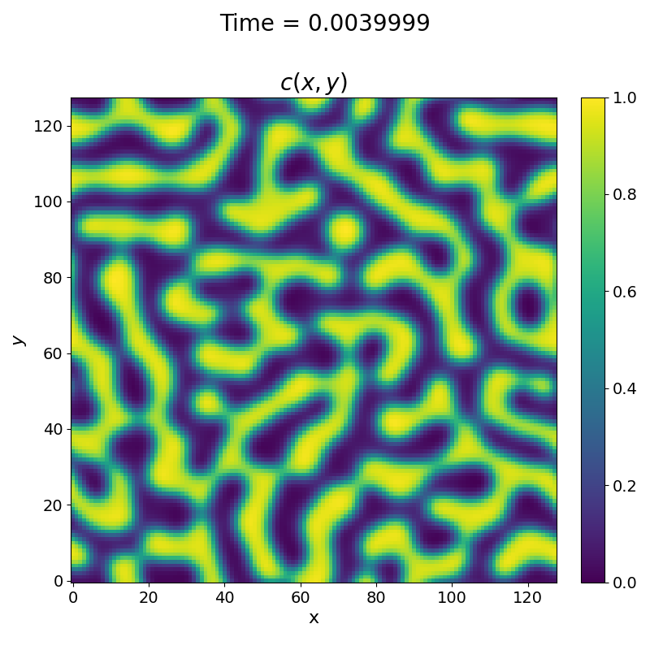

- Generated by
 1.9.3
1.9.3
|
SpinDec2
Software Modelling Spinodal Decomposition
|
To run the code with a non-constant mobility field, the problem variable in your input.txt file needs to be set to "nontemp".
You must also make sure you set the variables mobility_a and mobility_b to the values you want to simulate. In our example, we shall set them to mobility_a = 4and
mobility_b = 4. The forward Euler solver is very sensitive to the value of the input parameters, so some suggested values are given in the example input file picture below:
concentration_max = 0.6 concentration_min = 0.4 domain_x_size = 128 domain_y_size = 128 mobility_a = 4 mobility_b = 4 free_energy_gradient_parameter = 0.0001 bulk_free_energy = 1 checkpoint_interval = 5000 checkpoint_output_file = "out.cp" kcheckpoint_input_file = "out.cp" max_time = 4e-3 time_step = 1e-7 random_seed = 1234 use_input = 0 excitation_a = 10000 excitation_b = 20000 temperature_min = 950 temperature_max = 1050 problem = "nontemp" stabilization_term = 0 write_frequency = 1 single_precision = 0
The input file shows all the inputs that the user must specify. However, only the mobility parameters will affect how \(M\) is calculated for this case.
The results from the above input file are shown below, and you should expect similar results if you try it yourself:
  
Another nice quick validation you can do is to check whether you get the same result when you change the bounds of the initial concentration grid while keeping the average the same. For example, if we vary the minimum concentration from 0.4 to 0.1 and the maximum concentration from 0.6 to 0.9 in the above input file example, we get a very similar final solution:
  
Authors: Anas Siddiqui, Ben Gosling, Dyaln Morgan, Geraldine Anis, Matyas Parrag